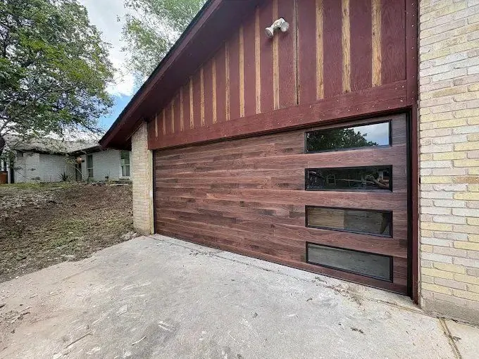

If you are considering replacing your garage door, choosing an insulated model is one of the best upgrades you can make for an Austin home. With summers regularly above 100 degrees, occasional winter cold snaps, and unpredictable weather year-round, an insulated door offers comfort, energy savings, and durability that a single-layer door simply cannot match.

An insulated garage door is built with multiple layers of steel or aluminum with insulating material between them. The most common insulating materials are polyurethane foam, which is injected and bonds to both steel layers for maximum rigidity, and polystyrene panels, which are inserted between the layers. Both perform better than a single-layer door, but polyurethane generally achieves a higher R-value for the same door thickness.
Unlike a standard single-layer door that offers virtually no resistance to heat transfer, an insulated door acts as a thermal barrier between your garage and the outdoors.
Significantly reduces heat buildup in your garage during Austin's brutal summer months. Especially valuable for attached garages and any garage used as a workspace or gym.
Reduces the heat load on your home's HVAC system. If your garage shares a wall with living space, a laundry room, or bedrooms, the difference is measurable.
The added mass and foam core absorbs vibration. Combined with nylon rollers and a belt-drive opener, the difference in noise is noticeable from inside the house.
Two or three layers of steel are significantly more resistant to dents, wind damage, and impacts than a single-layer door. Better long-term value in a climate that is hard on exterior materials.
R-value measures a material's resistance to heat flow. The higher the number, the better the insulation. Here is how to think about R-value for an Austin garage door:
| R-Value Range | Performance Level | Best For |
|---|---|---|
| R-6 to R-9 | Good | Detached garages not connected to living space |
| R-10 to R-13 | Better | Attached garages, garages with rooms above |
| R-14 and above | Excellent | Attached garages directly connected to living space, home offices, gyms |
For most Austin homeowners with an attached garage, R-10 or higher is worth the investment. If your garage shares a wall with a bedroom or living room, R-14 or higher will make a noticeably bigger difference in comfort and energy use.
Insulated doors are available in the same wide range of styles as standard doors. You are not giving anything up aesthetically. Common options include traditional raised panel, modern flush panel, contemporary full-view glass, carriage house, and wood-look steel in a range of colors. If a specific style matters to your home's curb appeal, we can help you find an insulated option that matches it.
Even the best insulated door performs poorly if it is not installed correctly. The right spring sizing for the added door weight, proper track alignment, and a compatible opener rating are all essential. We handle all of that as part of every new door installation and confirm everything is balanced and safe before we leave.
Whether you are replacing an outdated door or building a new home, an insulated garage door is a smart investment in Austin's climate. Free estimates across Austin, Round Rock, Cedar Park, Georgetown, Pflugerville, Leander, Lakeway, Buda, and Kyle.
Call (512) 947-4451